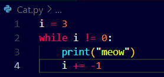

See how.. there are different types of loops
several keywords are there for loops
One of them is the "while"


As we can see here we get 3 times meow as we have programmed in the while loop
The above loop was from positive to reducing value of the variable.
Here below we have a much more improved version of code here


Another keyword used in loops is "for" and another one is "List"
What for loop does it allows us to iterate over a specific lsit of items.
Watch how..


See how simple line of code it is, for variable i in range of the list given in square brackets
List=square brackets
Now despite the number of lines of code be less but the program is not that efficient, as in extreme cases we are not going to type that long list to iterate over.
For such cases we use the range() function in python that makes it much more easy to read the code and define the range of the function.
See how it transforms the code...
 the output remains the same
the output remains the sameSee how can we meow in different manners


Now we will see how different keywords of python work together
continue - it literally continues to be in the most recently began loop
break- it breaks you from the most recently began loop
watch how it actually works
 we can improve this watch how
we can improve this watch how

Now we can make a function for meow,
which actually does not exists in python but we can create it for ourselves,
watch how..
Here what we are doing is:
- Creating a main function , in which calling another function to get a positive integer form a user. Though the function yet does not exist.
- Now we will create the function to get number input from a user , here we will return to the same loop untill and unless the user enters a positive integer
- Now we will create the meow function that prints meow in the range that is defined by the number entered by the user i.e., n.


Now as we have seen so far that how loops can be combined with functionsto get custom results so now see further how lists are important and very useful while programming in python
Having a list of values is important and is a benefit as we are going to work more and more with data.
Watch what we do with lists.
Here is another feature of python that is we can iterate python over anything not just numbers but strings, lists etc anything


 Output is the same
Output is the sameNow in Python there are not only Lists, ints, strings, bools, there are something called as Dictionaries or dicts that allow us to relate or assign keys with values like pairs of words.
watch how...


What we have here is that we can actually create a dictionary in a list as shown below:
Dictionary is noting but collection of key value pairs
In the below example we use the sep="" method to separate the result with custom symbol or space
Notice below as we have made 4 dictionaries for each ofthe students with keys Name, House, and Patronous.
Note::: There is a specific keyword in python for denoting empty values "None" as highlighted in orange color.


Now note that Loops can also be used to create interesting patterns.
Its simple but you must understand the logic behind the code working to be able to make custom patterns.
Watch how...


A very simple pattern.


Now for printing a square of # we need a 3*3 square of #
Steps of understanding the code:
- Here we create a normal main function first in which we call print_square function which we will define later
- Now we define the print_square function and pass a parameter inside named "size" for width and height
- we use a for loop to print each row that is 3 in case of this, so for each row we have a loop and variable i in range of size{parameter} passed in the function print_square.
- Now for each brick in a rowwe need another loop here it is for j in range size{parameter} we print brick{#}
- Now notice another print statement which is empty in the first loop we created which passes the cursor to new line only after each row is completed and not after each brick.
- Watch how efficiently the code works...!!


 Works the same!!!
Works the same!!!